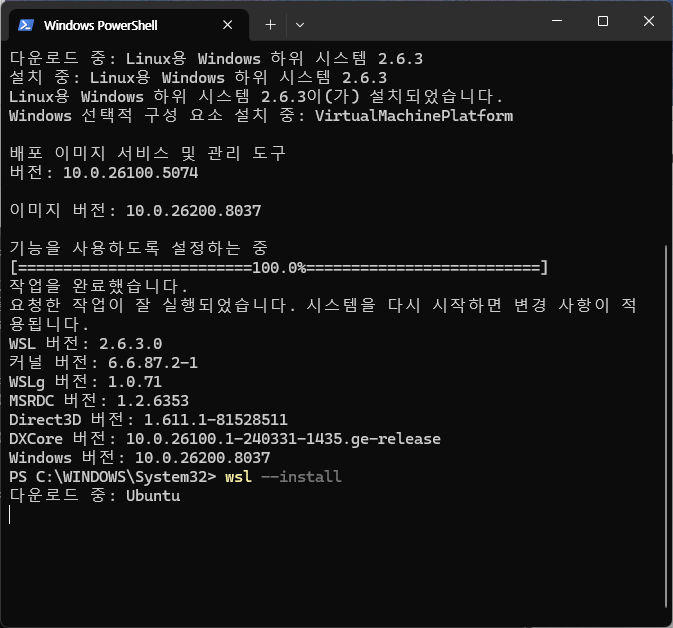
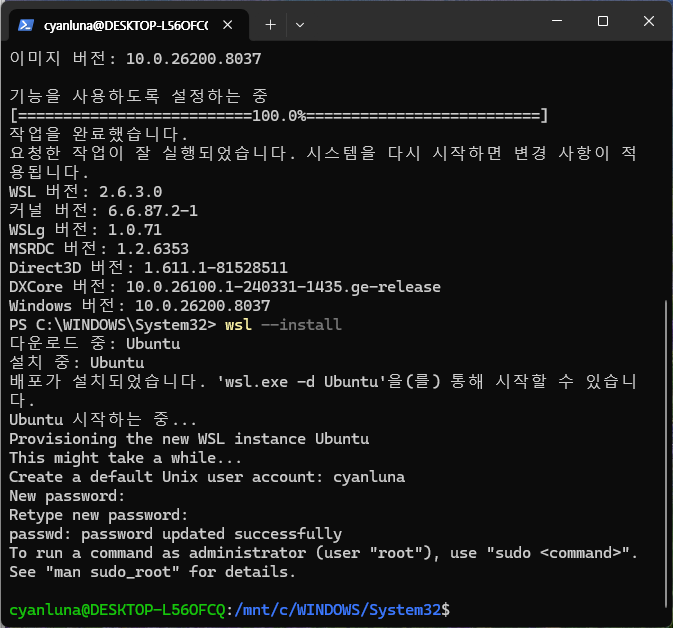
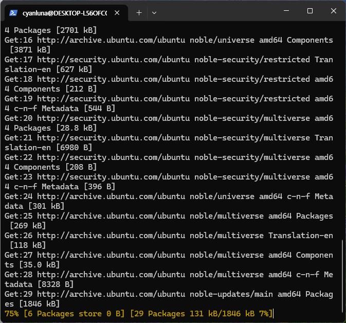
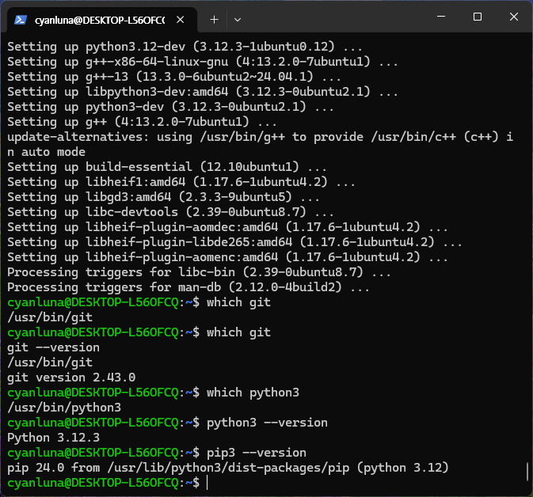
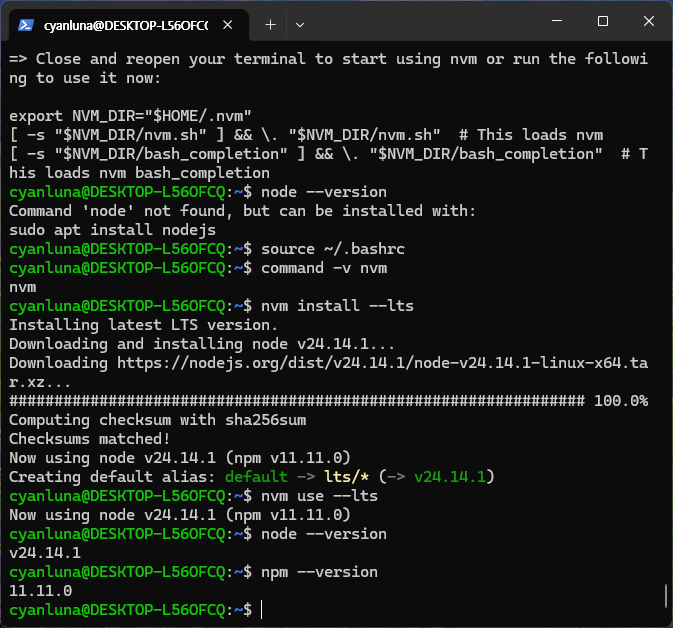
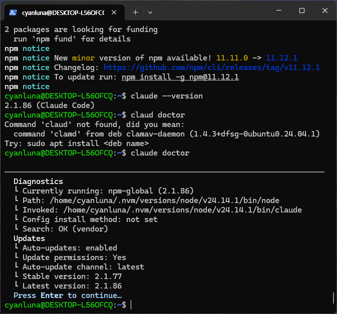
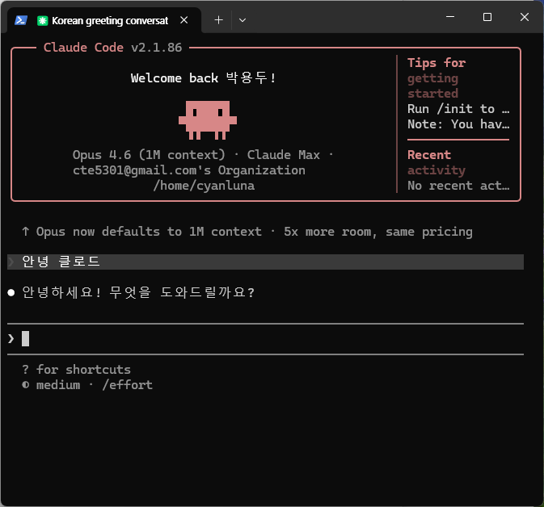

원칙
PowerShell은 WSL 설치까지만
- 처음 한 번만 관리자 PowerShell에서
wsl --install실행 - 그 다음부터는 Ubuntu 터미널 안에서 Git, Python, Node, AI CLI 설치
- 프로젝트 폴더는 가능하면
~/projects아래에서 관리
Bootstrap
최소 부트스트랩의 목표는 하나다. WSL Ubuntu 안에 Git, Python 3, Node.js, Claude Code, Gemini CLI를 올리고 바로 프로젝트를 시작할 수 있는 상태를 만든다. Windows 경로와 PowerShell 의존도를 줄이면 에이전트 코딩 환경이 훨씬 안정적이다.
원칙
wsl --install 실행~/projects 아래에서 관리폴더 규칙
/mnt/c/Users/... 대신 ~/projects/... 권장Bootstrap Flow
wsl --version
git --version
python3 --version
node --version
claude gemini
Step 1
Windows에서 시작 메뉴를 열고 PowerShell을 관리자 권한으로 실행한다. 이미 설치된 경우 버전 확인부터 하고, 미설치 상태면 바로 Ubuntu를 설치한다.
wsl --version
wsl --install
# Ubuntu를 명시해서 설치하고 싶다면
wsl --install -d Ubuntu
# 설치 가능한 배포판 확인
wsl --list --online설치가 끝나면 재부팅하고, 다시 Windows에 로그인한 뒤 Ubuntu를 열어 Linux용 사용자 이름과 비밀번호를 만든다.

wsl --version 으로 설치 상태를 확인하고,
Ubuntu가 내려받아지는지 본다.

sudo 비밀번호다.
Step 2
여기서부터는 PowerShell이 아니라 WSL Ubuntu 터미널 안에서 진행한다. 패키지 목록을 최신 상태로 갱신하고, 이후 작업에 자주 필요한 기반 도구를 한 번에 설치한다.
wsl
sudo apt update
sudo apt upgrade -y
sudo apt install -y git curl unzip python3 python3-pip python3-venv build-essentialUbuntu 비밀번호를 물으면 방금 만든 Linux 비밀번호를 입력한다. 입력 중 화면에 글자가 안 보여도 정상이다.

apt update 와 apt install 이 정상적으로 진행되면 WSL
안에 기본 개발 도구를 깔 준비가 된 상태다.
Step 3
이 단계에서는 명령이 실제로 Ubuntu 경로에서 실행되는지만 확인하면 된다.
python 대신 python3를 쓰는 습관을 권장한다.
which git
git --version
which python3
python3 --version
pip3 --version
which 결과가 보통 /usr/bin/... 처럼 Linux 경로로 나오면
정상이다.

which git, which python3 결과가 Linux 경로이고
버전이 출력되면 Step 3은 끝이다.
Step 4
Gemini CLI와 대부분의 웹 개발 도구는 Node.js가 필요하다. WSL에서는 버전 관리가 쉬운
nvm 방식이 가장 덜 꼬인다.
curl -o- https://raw.githubusercontent.com/nvm-sh/nvm/v0.40.3/install.sh | bash
# bash를 쓰면
source ~/.bashrc
# zsh를 쓰면
# source ~/.zshrc
command -v nvm
nvm install --lts
nvm use --lts
node --version
npm --version
command -v nvm 결과로 nvm 이 출력되면 정상이다. 이 단계가
끝나야 npm install -g ... 계열 도구를 안정적으로 설치할 수 있다.

nvm install --lts 뒤에 node --version 과
npm --version 이 바로 나오면 이후 AI CLI 설치가 수월하다.
Step 5
Claude Code와 Gemini CLI 모두 Node.js 기반으로 설치한다. Claude는
sudo npm install -g 대신 일반 사용자 권한으로 설치하고, Gemini는 npm
전역 설치 후 Google 계정으로 로그인하는 흐름이 가장 단순하다.
# Claude Code 설치
npm install -g @anthropic-ai/claude-code
claude --version
claude doctor
# Gemini CLI 설치
npm install -g @google/gemini-cli@latest
gemini
Claude는 claude, Gemini는 gemini 를 실행한 뒤 브라우저
로그인 흐름을 따라가면 된다. Claude Code는 무료 Claude.ai 플랜만으로는 접근이 안 될 수
있으므로 계정 종류를 미리 확인한다.

claude --version 과 claude doctor 로
실행 파일과 환경 상태를 먼저 확인한다.

Step 6
이후부터 clone, install, dev server 실행, AI 에이전트 호출은 이 폴더 안에서 한다. 경로 문제를 줄이기 위해 영문 소문자 중심의 폴더명을 권장한다.
mkdir -p ~/projects
cd ~/projects
pwd
# 예시
mkdir my-first-app
cd my-first-app빠른 검증
wsl --version
wsl -l -v
# 아래부터는 Ubuntu 안에서
git --version
python3 --version
node --version
npm --version
claude --version판단 기준
문제 1
wsl --install 이 안 되거나 권한 오류가 날 때wsl --list --online 이 동작하면 wsl --install -d Ubuntu 로 다시 시도한다.wsl --install --web-download -d Ubuntu 를 시도한다.문제 2
python 명령이 없는데 python3 는 될 때python3 --version 으로 통일한다.pip3 를 기준으로 생각하면 덜 헷갈린다.문제 3
nvm, node, npm 이 새 터미널에서 안 잡힐 때source ~/.bashrc 또는 source ~/.zshrc 를 실행한다.command -v nvm 이 비어 있으면 설치 스크립트가 셸 설정 파일에 반영되지 않은 상태다.문제 4
node: not found 류 문제가 날 때which node 와 which npm 결과가 /mnt/c/ 를 가리키면 Windows 쪽 Node를 보고 있는 상태다.npm config set os linux 를 실행한 뒤 다시 설치를 시도한다.npm install -g @anthropic-ai/claude-code --force --no-os-check 로 재시도하고, 이때도 sudo 는 쓰지 않는다.~/projects 아래 프로젝트에서 실행한다.문제 5
문제 6
/mnt/c/Users/... 에서 돌리고 있지 않은지 먼저 확인한다.~/projects/my-app 같은 영문 경로로 옮긴다.한 줄 정리
PowerShell은 WSL 설치용, 실제 개발은 WSL용. Git, Python, Node, AI CLI까지 전부 WSL 안에서 맞추면 에이전트가 덜 흔들린다.
공식 링크